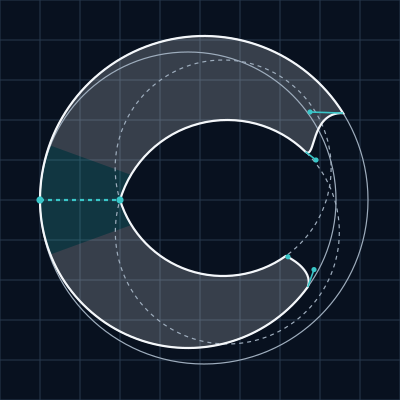

Refinement 02 · from study 01
Shared inflection
Judge the mark and its navbar lockup before the construction.
Pure white
36px mark box · 24px Inter · Covan 600 / Labs 425
Confluence / two-color
36px mark box · 24px Inter · Covan 600 / Labs 425
Pure navy
36px mark box · 24px Inter · Covan 600 / Labs 425
Confluence / light
36px mark box · 24px Inter · Covan 600 / Labs 425
The signature gesture
Two ends, one opening.
A shallow reverse curve at the upper terminal is answered by a quieter lower transition. The two faces carry the same directional flow.
What changed
The straight, matching cuts of study 01 are replaced by two custom cubic curves. Their relationship is visible in the finished silhouette. The circular body retains the reference’s balance and eccentric inner arcs.
The terminal relationship and the color perform different roles: the opening carries the signature; aqua locates the real meeting of the two source ribbons at the back.
Compare reference study 01 ↗Construction
Two origins. One continuous identity.
The upper and lower ribbons meet across the back of the C. The internal joining line disappears in the merged outline. A short curved aqua section spans that join: structure becoming an active, shared identity.

Aqua handles: terminal curves. Dotted aqua line: removed join.
Drawn from geometry
No font glyph is used in the mark. Two eccentric arc systems create the body; custom Bézier curves shape the opening. The unequal inner and outer centres preserve optical weight variation.
The aqua region follows the existing curved silhouette. It crosses both source ribbons, without a gap, overlap or detached block.
Color represents confluence, not one colored half. The same outline is used for every color treatment.
Download construction SVG
Alternate color placement · same geometry
Color at the origin.
A short portion of the upper originating curve begins in aqua and continues into the unified white C. This is one alternate treatment, not an additional mark.
Pure black / independent of color
36px mark box · 24px Inter · Covan 600 / Labs 425
SVG sources and transparent PNG exports
Each SVG has the same merged contour. PNGs are available at 16, 24, 32, 64 and 512px.
- Pure white: mark SVG · lockup SVG · 512px PNG
- Pure navy: mark SVG · lockup SVG · 512px PNG
- Pure black: mark SVG · lockup SVG · 512px PNG
- Confluence / dark: mark SVG · lockup SVG · 512px PNG
- Confluence / light: mark SVG · lockup SVG · 512px PNG
- Alternate / origin: mark SVG · lockup SVG · 512px PNG